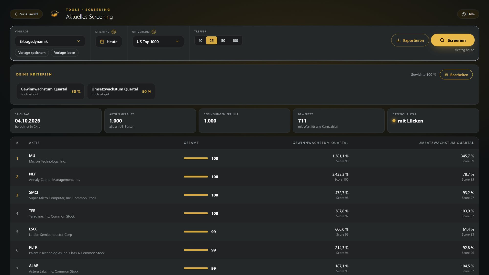
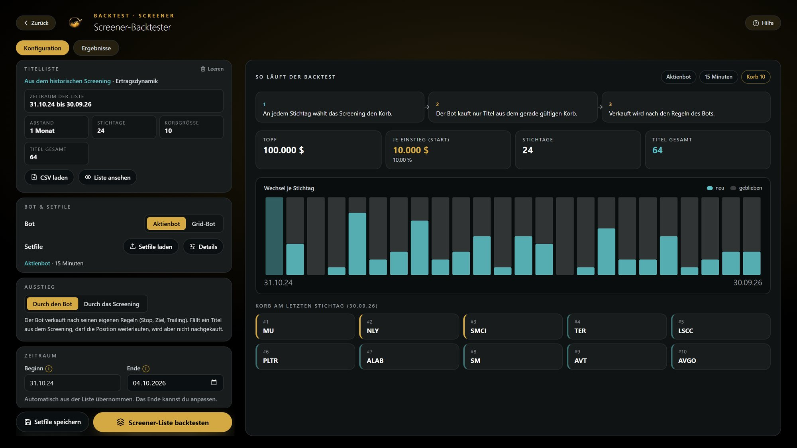
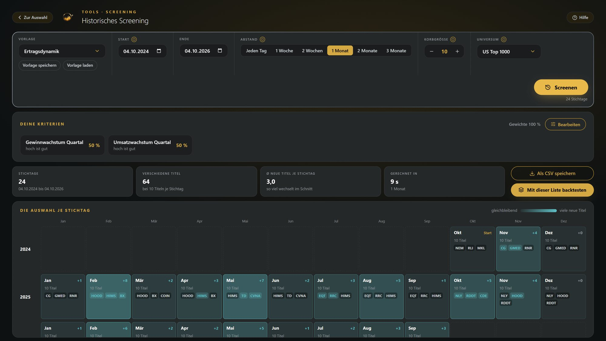
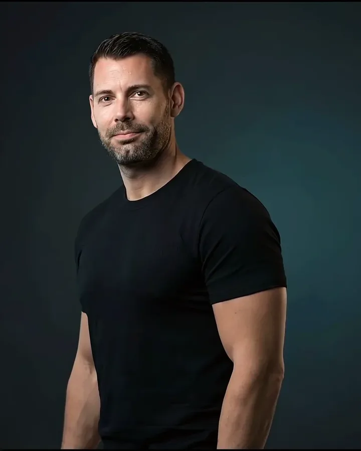

Ich habe seit Anfang Oktober viele Screener-Strategien mit US-Aktien getestet, die wichtigsten bis zurück ins Jahr 2009. Live zeige ich dir, welche vorne lagen, welche nicht und woran das lag. Mit allen Zahlen, auch mit den Schwächen.
Getestet habe ich alles mit All Time High, unserer Software für den Aktienhandel nach festen Regeln. Sie läuft unter Windows und ist direkt an dein Konto bei Interactive Brokers angebunden, auch über CapTrader oder LYNX.
Im Marktscreener filterst du nach Kennzahlen und Chartmustern, zum Beispiel nach Aktien kurz vor dem Ausbruch über einen Widerstand.
Du siehst, welche Kriterien ich verwendet habe und wie du eine Vorlage selbst nachbaust.

Jede Screener-Strategie testest du bis 2009 zurück, bevor du entscheidest, ob du sie handelst. Du siehst jeden Trade und die Kennzahlen.
Im Webinar zeige ich dir, welche Strategien im Backtest vorne lagen und wo ihre Schwächen sind.
Backtests rechnen auf vergangenen Kursdaten. Die Ergebnisse sind hypothetisch und keine Garantie für die Zukunft.

Die gefundenen Aktien übernimmst du selbst in deinen Handelsplan und tauschst sie auch selbst aus, wenn sich die Liste ändert.
Im Plan setzt All Time High deine festen Regeln für Kauf und Verkauf um, der Aktienbot legt dazu eine echte Stop-Order bei Interactive Brokers an.

Die Bildschirmfotos zeigen die Software, keine Ergebnisse von Kundenkonten. Backtests sind hypothetisch.

Ich bin Inhaber von Kaspareit Trading. Seit Anfang Oktober habe ich viele Screener-Strategien mit All Time High getestet.
Im Webinar zeige ich dir meine eigenen Tests: was vorne lag, was nicht und woran das lag. Mit allen Zahlen, auch mit den Schwächen.
Welche Aktien-Screener-Strategie lag im Backtest vorne? Die Antwort bekommst du am Samstag, mit allen Zahlen und auch den Schwächen.
Jetzt kostenlos anmeldenDie Anmeldung läuft über Zoom. Danach bekommst du deinen Zugangslink per E-Mail.
Risikohinweis: All Time High ist eine Software, keine Anlageberatung und keine Vermögensverwaltung. Der Handel mit Aktien ist mit Risiken bis hin zum Verlust des eingesetzten Kapitals verbunden. Ergebnisse aus Backtests sind hypothetisch, vergangene Ergebnisse sind keine Garantie für zukünftige Entwicklungen. Die Bildschirmfotos zeigen die Software, keine Ergebnisse von Kundenkonten. Kontakt: info@kaspareit-trading.de
© 2026 Kaspareit Trading · Impressum · Datenschutz